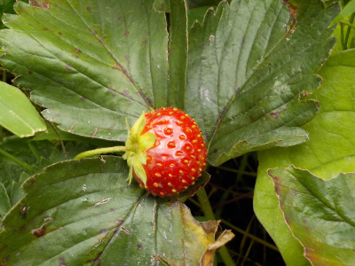
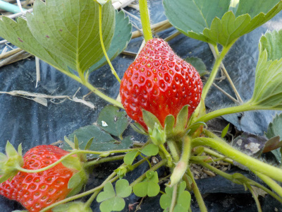
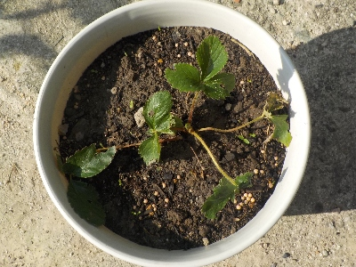
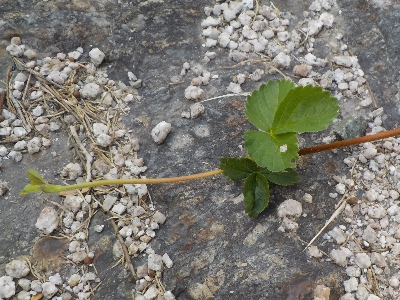

遊びで植物を育てよう
品種はわからないけど、畑で生き延びている強いイチゴ
更新日 : 2025/05/10
今頃のイチゴは濃厚な味でした。
更新日 : 2021/07/18

四季採れのイチゴじゃない普通のイチゴに実が出来ていました。なにげに四季なりじゃなくても夏にイチゴってできるんですよね。
食べてみたら濃厚な甘さでジャムっぽい味でした。
また見つけたら食べようと思います。
TOP > 果物 > イチゴ
イチゴを食べました。
2022/05/05

今日収獲したのは小粒が多かったですが、甘くて美味しかったです。
イチゴは畑に必要だって思いました。
TOP > 果物 > イチゴ
畑からイチゴ苗を持ってきて植木鉢に植えました。
更新日 : 2024/11/04

先日枯れたイチゴの代わりを畑から持ってきました。
畑はすぐに虫が寄って来るので、植木鉢で育てようかと思っています。これの調子が良かったら鉢の数を増やすつもりです。
苺からランナーが出ました。
2025/05/10

鉢植えの苺からランナーが出ました。
このランナーを使って苗を増やそうと思っています。苗が何本採れるでしょうね。
TOP > 果物 > イチゴ
苺は美味しい。沢山食べたい。
【おいしいものを食べよう。】【たくさん寝よう。】
【ソロ活をしよう!】【季節感のあることをしよう。】【動画視聴はほどほどに。】【当サイトの全てのコンテンツは無断転載禁止です。】